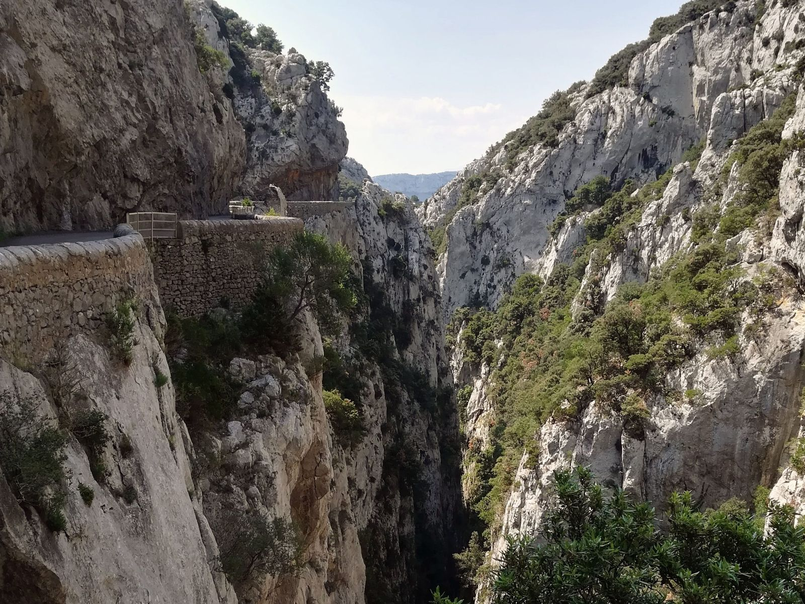

Étude · Gorges de Galamus (66)
Étude touristique
- Mission
- Étude
- Localisation
- Gorges de Galamus (66)
- Maîtrise d’ouvrage
- PNR Corbières Fenouillèdes (Aude et Pyrénées-Orientales)
- Équipe
- Maîtres du Rêve (mandataire), Troisième Paysage, Test mobilités
- Superficie
- Linéaire de 5 km
- Date
- 2023
Une stratégie globale pour répondre à la surfréquentation touristique d’un site classé, traversé par une seule route étroite.
Tourisme, paysage, environnement, mobilités, géologie, gestion de la fréquentation
2 / 7 · Étude touristique
Contexte
Les gorges, à cheval sur l’Aude et les Pyrénées-Orientales, ont une forte identité géologique et patrimoniale. On les traverse par une seule route étroite, avec des vues sur l’Agly. La fréquentation ne cesse de croître, ce qui pose des enjeux de sécurité, de gestion des flux, de conflits d’usage et de préservation de la biodiversité. La route est à sens unique, et les visiteurs entrent en conflit avec les habitants qui doivent l’emprunter.
3 / 7 · Étude touristique
4 / 7 · Étude touristique
Propositions
- Une gestion qui varie selon les saisons : découverte en mode doux et navettes depuis les parkings, pour fluidifier la circulation locale.
- Des belvédères et des panneaux pédagogiques qui valorisent les points de vue et encouragent la balade et les pauses.
- Des aménagements à impact minimal sur le paysage, intégrés au site classé.
5 / 7 · Étude touristique
6 / 7 · Étude touristique
7 / 7 · Étude touristique